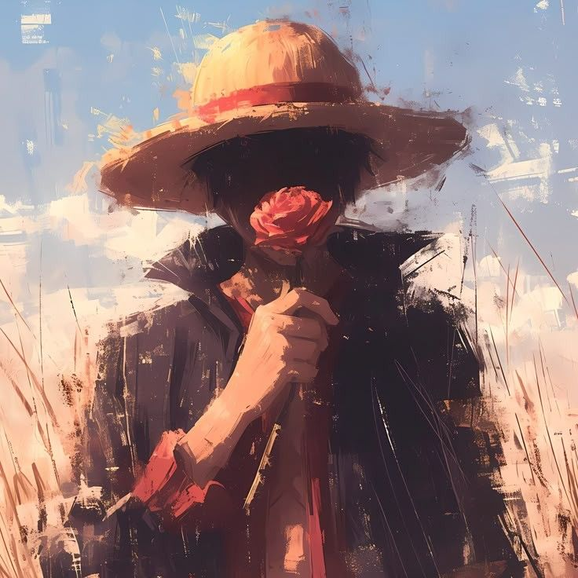

Goma's Grand Archive
The Grand
Archive.
One continuous voyage through the story that changed everything.
01 · The Character Log
Nine people.
A thousand reasons.

Nine records · 001 — 009
Not encyclopedia entries.
The reasons they stayed.
02 · The Anime Journey
I used to call them just cartoons.
Every world. Every opinion.
31 records, preserved as written.
Some stories gained company. Rewatch memories
03 · The Card Vault
My kind of treasure.
Twelve confirmed entries across eleven card numbers. Regular and Parallel OP14-112 are separate records. Quantity, language, condition and price are not recorded yet, so they are shown as unknown, never zero. Card art is the official catalog reference, not a photo of the owned copy.
04 · Scenes that stay
“Come on, heartbeat.
Beat louder.”
Gear 5 vs Kaido. Pure joy and defiance.
Sometimes the fight
is the speech.
Zoro vs King. Aura and spectacle.
Every adventure
leaves a record.
To be continued.